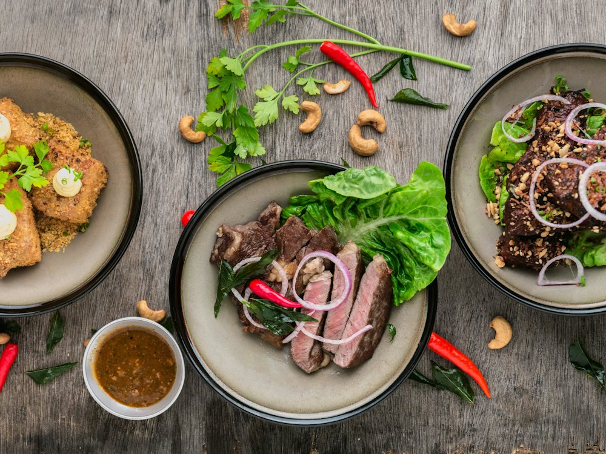

✦ Выбор OnlyGuests Рейтинг 4.9+ и больше 1000 оценок гостей в 2ГИС
Line Brew
Ресторан · Европейская, своя пивоварня · Алматы
Рейтинг 2ГИС
★ 4.9
2 000 оценок
Год открытия
нет данных
в открытых источниках не нашли
Средний чек
15 000 ₸
по данным 2ГИС
Адрес и часы
📍 пр. Назарбаева, 187а, Алматы · Бостандыкский район
🕒 часы работы уточняются — смотрите в 2ГИС
Удобства
О заведении
Ресторан Line Group со своей пивоварней, живой музыкой и летней верандой.
Меню
Рядом в справочнике
Late night show · Laureate Grand Cafe · Lenore pub · Line Brew Reserve · Littles · Luckee Yu